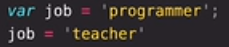

ES6: let and const
let:
Creating an empty veriable
Creating an veriable that we might want to change the value of it later.
const:
Creating an veriable of which it's value will never change.( an imutable veriable )
var:
